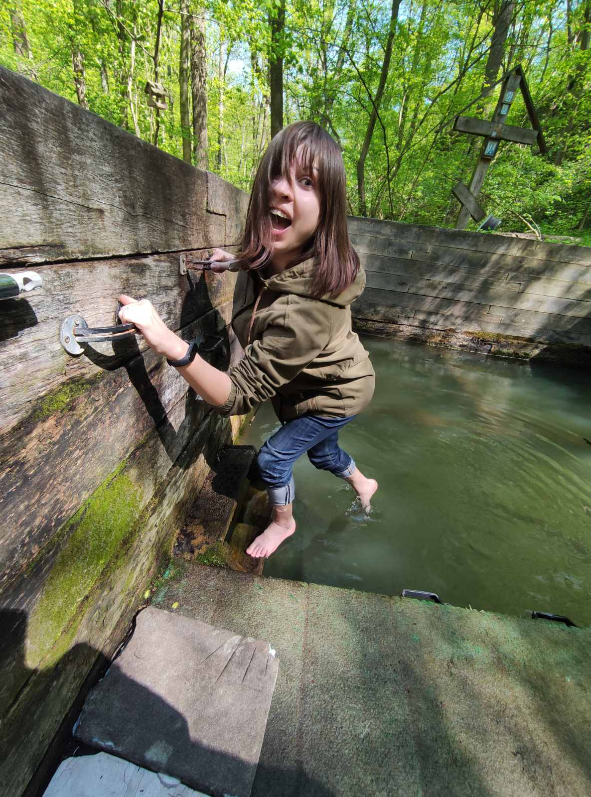
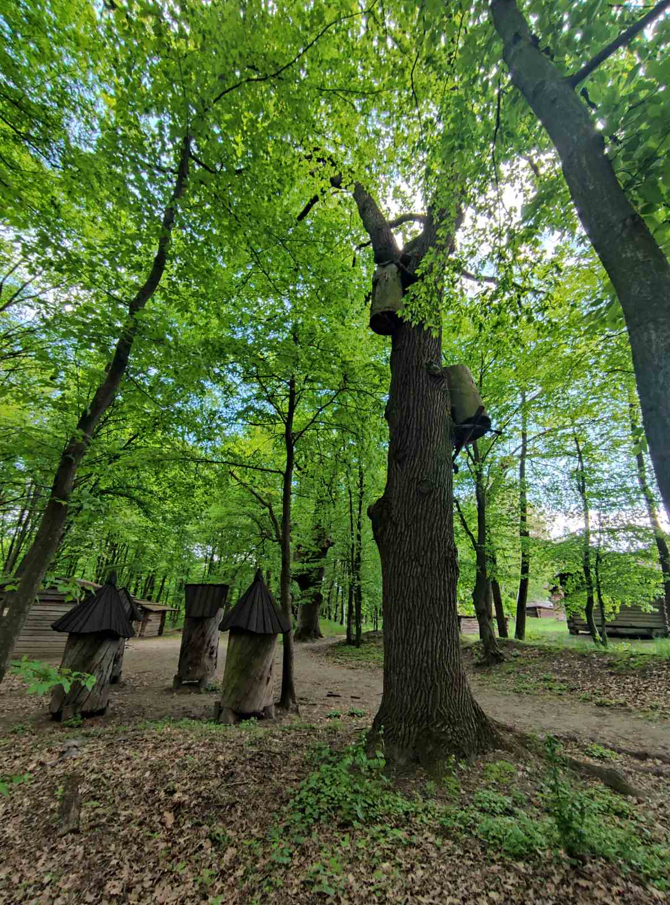

My favorite places in Kiev
-
Kitaevo
- 

Kitaevo - it is part of Goloseevsky forest. There is monastery and
lakes. Also there is a font in the woods. It is very cold, even at
summer. Most tourists do not know about it. This place is a wild
forest. People rarely walk in the deep forest. I often go from
here to Pyrohiv.
-
Lysa Hora
Lysa Hora - it is hill in the forest around Vydubychi. There is
pagan shrine of Perun. You can see woods statue and a rock for
offerings. There are also drainage tunnels. They are interesting
for diggers. But the best thing is the view of the Dnipro.
-
Pyrohiv
-

-
-

National Museum of Folk Architecture and Life of Ukraine - it is
in the south-west of Kyiv and around the forest.There are lots of
old houses and items. There you feel like in the old days. There
is very calm and quiet. Only songs of birds around.